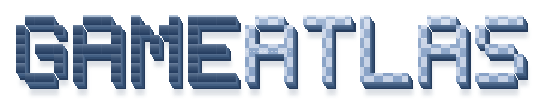

Animation

Bringing LLM Agents Back to Basics in Visual Coding and Spatial Reasoning for Game Development
1 Allspark 2 Shanghai Jiaotong University 3 Nanjing University of Aeronautics and Astronautics 4 Fudan University 5 ShanghaiTech University
* Equal contribution † Project Lead ‡ Corresponding Author
Building a scene takes code and spatial judgment.
GameAtlas evaluates visual coding and spatial reasoning through 91 tasks drawn from professional game development workflows. Across eight disciplines, agents use code to recover 3D shape from reference views, place objects in relation to one another, and reproduce motion over time.
We break real game development workflows into tasks that test specific capabilities, from inferring depth across views to preserving contact as a character moves. Agents can test and revise their solutions through repeated submissions to hidden tests within each task’s budget. Executable criteria defined by game development experts score each capability directly from the submitted artifact, with no LLM judge.
91Production tasks
8Game development disciplines
IterativeBuild, verify, and refine
DeterministicExpert-defined evaluation
How well do agents create?
First submission · AvgFinal score · Avg
No matching models.
Tool rounds and calls are medians per task. Output tokens and estimated API cost (USD) are averages per 91-task run.
No matching models.
A workflow worth exploring.
Expert-defined standards.
Deterministic evaluation.
GameAtlas evaluates agents’ visual coding and spatial reasoning abilities through the artifacts they submit. Rendered views measure visual fidelity. Geometry and motion checks test whether a mesh matches the reference across viewpoints or a planted foot stays in place. Executable tests apply criteria and tolerances set by game development experts, with no LLM judge.